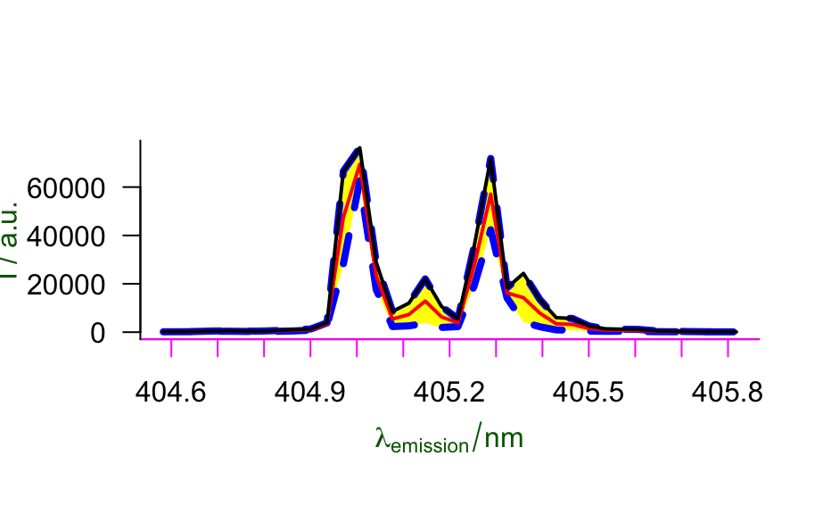
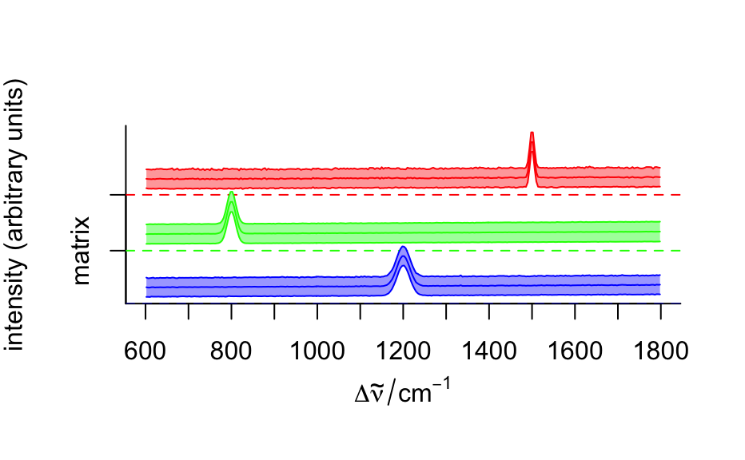
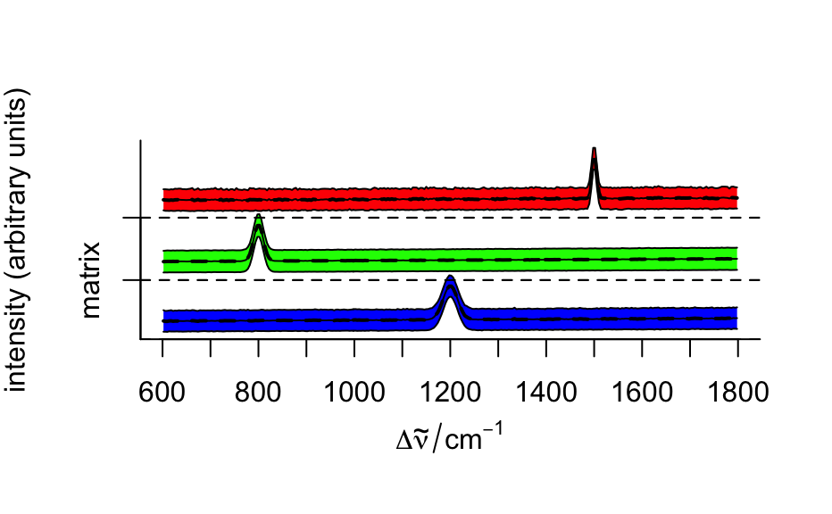

Plotting Spectra
Plot the spectra of a hyperSpec object, i.e. intensity over
wavelength. Instead of the intensity values of the spectra matrix summary
values calculated from these may be used.
Source: R/plotspc.R
plotspc.RdThis is hyperSpec's main plotting function for spectra plots.
Usually, the stacked argument of plotspc will do fine, but if you
need fine control over the stacking, you may calculate the y offsets yourself.
plotspc( object, wl.range = TRUE, wl.index = FALSE, wl.reverse = FALSE, spc.nmax = hy.getOption("plot.spc.nmax"), func = NULL, func.args = list(), stacked = NULL, stacked.args = list(), add = FALSE, bty = "l", plot.args = list(), col = "black", lines.args = list(), xoffset = 0, yoffset = 0, nxticks = 10, axis.args = list(), break.args = list(), title.args = list(), fill = NULL, fill.col = NULL, border = NA, polygon.args = list(), zeroline = list(lty = 2, col = col), debuglevel = hy.getOption("debuglevel") ) stacked.offsets( x, stacked = TRUE, min.zero = FALSE, add.factor = 0.05, add.sum = 0, .spc = NULL, debuglevel = hy.getOption("debuglevel") )
Arguments
| object | the |
|---|---|
| wl.range | the wavelength range to be plotted. Either a numeric vector or a list of vectors with different wavelength ranges to be plotted separately. The values can be either wavelengths or wavelength indices (according to
|
| wl.index | if |
| wl.reverse | if |
| spc.nmax | maximal number of spectra to be plotted (to avoid accidentally plotting of large numbers of spectra). |
| func | a function to apply to each wavelength in order to calculate summary spectra such as mean, min, max, etc. |
| func.args |
|
| stacked | if not |
| stacked.args | a list with further arguments to
|
| add | if |
| bty | see |
| plot.args |
|
| col | see |
| lines.args | list with further arguments to
|
| xoffset | vector with abscissa offsets for each of the
The values are interpreted as the distance along the wavelength axis that
the following parts of the spectra are shifted towards the origin. E.g.
if |
| yoffset | ordinate offset values for the spectra. May be offsets to
stack the spectra ( |
| nxticks | hint how many tick marks the abscissa should have. |
| axis.args |
|
| break.args | list with arguments for
|
| title.args | list with further arguments to
|
| fill | if not If |
| fill.col | character vector with fill color. Defaults to brightened
colors from |
| border | character vector with border color. You will need to set the
line color |
| polygon.args | list with further arguments to
|
| zeroline |
|
| debuglevel | if > 0, additional debug output is produced,
see |
| x | a |
| min.zero | if |
| add.factor, add.sum | proportion and absolute amount of space that should be added. |
| .spc | for internal use. If given, the ranges are evaluated on |
Value
plotspc invisibly returns a list with
the abscissa coordinates of the plotted spectral data points
a matrix the ordinate coordinates of the plotted spectral data points
the wavelengths of the plotted spectral data points
numeric with the yoffset for each group in
stacked
numeric with the group number for each spectrum
if
stacked is a factor, the levels of the groups
Details
New plots are created by plot, but the abscissa and
ordinate are drawn separately by axis. Also,
title is called explicitly to set up titles and
axis labels. This allows fine-grained customization of the plots.
If package plotrix is available, its function
axis.break is used to produce break marks for cut
wavelength axes.
Empty levels of the stacking factor are dropped (as no stacking offset can be calculated in that case.)
See also
plot, axis,
title, lines,
polygon, par for the
description of the respective arguments.
axis.break for cut marks
See plot for some predefined spectra plots such as mean
spectrum +/- one standard deviation and the like.
Author
C. Beleites
C. Beleites
Examples
plotspc (flu)## artificial example to show wavelength axis cutting plotspc (chondro [sample (nrow (chondro), 50)], wl.range = list (600 ~ 650, 1000 ~ 1100, 1600 ~ 1700), xoffset = c (0, 300, 450))plotspc (chondro [sample (nrow (chondro), 50)], wl.range = list (600 ~ 650, 1000 ~ 1100, 1600 ~ 1700), xoffset = c (300, 450))## some journals publish Raman spectra backwards plotspc (chondro [sample (nrow (chondro), 50)], wl.reverse = TRUE)plotspc (laser[(0:4)*20+1,,], stacked = TRUE)plotspc (laser, func = mean_pm_sd, col = c(NA, "red", "black"), lines.args = list (lwd = 2), fill = c (1, NA, 1), fill.col = "yellow", border = "blue", polygon.args = list (lty = 2, lwd = 4), title.args = list (xlab = expression (lambda[emission] / nm), y = list(line = 3.4), col.lab = "darkgreen"), axis.args = list (x = list (col = "magenta"), y = list (las = 1)) )mean.pm.sd <- aggregate (chondro, chondro$clusters, mean_pm_sd) plot (mean.pm.sd, col = matlab.palette (3), fill = ".aggregate", stacked = ".aggregate")mean.pm.sd <- aggregate (chondro, chondro$clusters, mean_pm_sd) offset <- stacked.offsets (mean.pm.sd, ".aggregate") plot (mean.pm.sd, fill.col = matlab.palette (3), fill = ".aggregate", stacked = ".aggregate")plot (aggregate (chondro, chondro$clusters, mean), yoffset = offset$offsets, lines.args = list (lty = 2, lwd = 2), add = TRUE)barb <- do.call (collapse, barbiturates [1:3]) plot (barb, lines.args = list (type = "h"), stacked = TRUE, stacked.args = list (add.factor = .2))